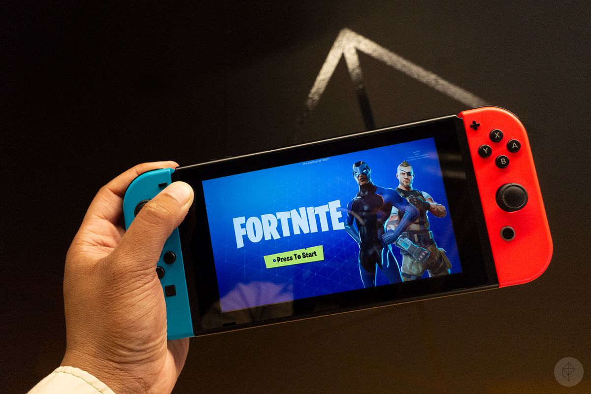
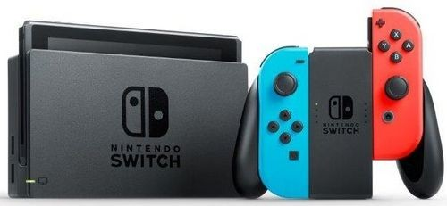
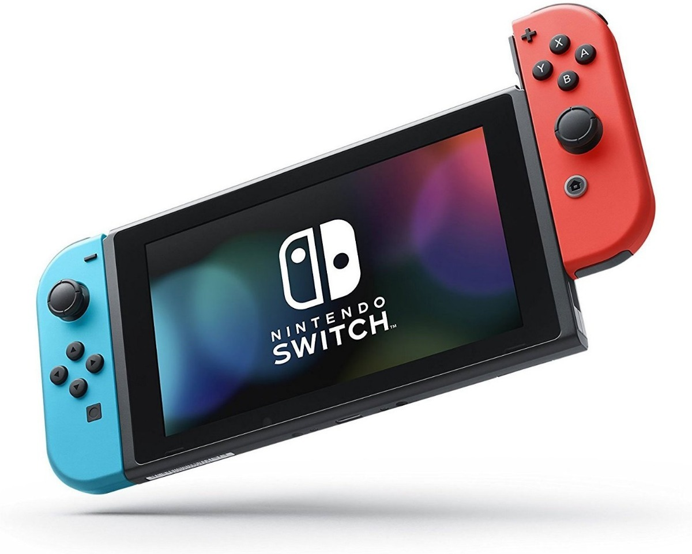

Entretenimiento
Nintendo Switch
Nintendo considera a Switch una consola híbrida. Se puede utilizar como consola de sobremesa con la unidad principal insertada en una estación de acoplamiento para conectarla con un televisor. Alternativamente, puede ser extraída de la base y utilizada de forma similar a una tableta a través de su pantalla táctil LCD, o colocada sobre una superficie gracias a su soporte plástico integrado siendo así visible por varios jugadores.

La Switch utiliza dos controladores inalámbricos llamados en conjunto Joy-Con, que incluyen cuatro botones de acción estándar y un joystick direccional, así como sensores para la detección de movimiento y retroalimentación táctil de alta definición, aunque se diferencian en algunos botones y características adicionales. Dos Joy-Con pueden conectarse uno a cada lado de la consola para usarse como consola portátil, conectarse al accesorio Grip proporcionado junto a la consola para usarlos como un mando más tradicional, o ser utilizados individualmente en la mano como el mando Wii, y de esta forma usarse con juegos multijugador locales

El concepto de la Switch surgió como reacción de Nintendo a varios trimestres de pérdidas financieras en 2014, atribuidas a las malas ventas de su consola anterior, la Wii U, así como una mayor competencia en el mercado de los juegos para dispositivos móviles. Posteriormente, el presidente de Nintendo, Satoru Iwata, empujó a la compañía en la dirección de los juegos móviles y la creación de un hardware totalmente nuevo.
